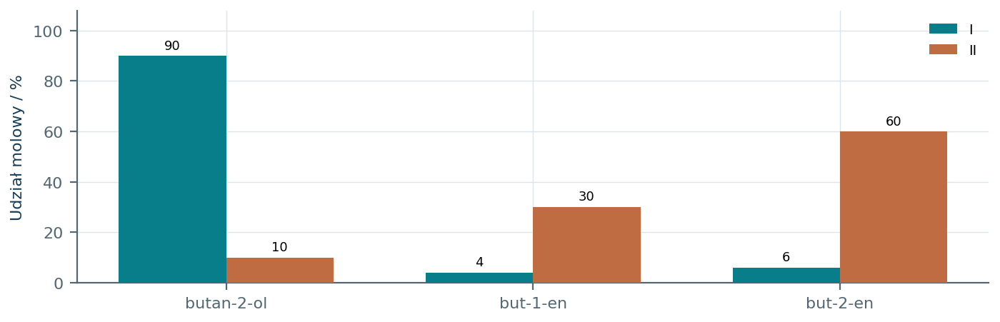
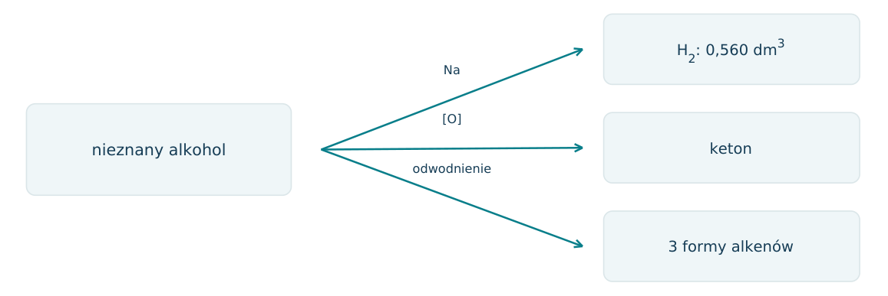
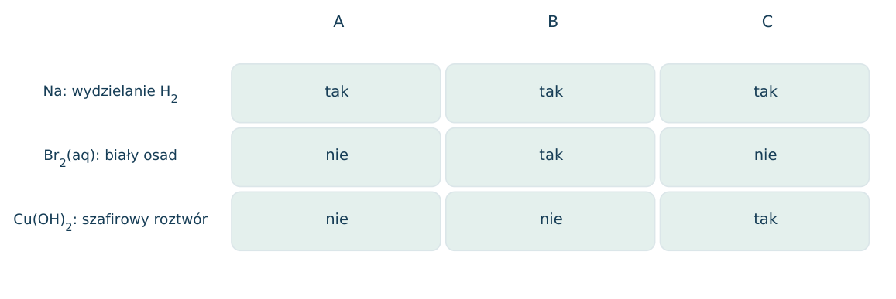
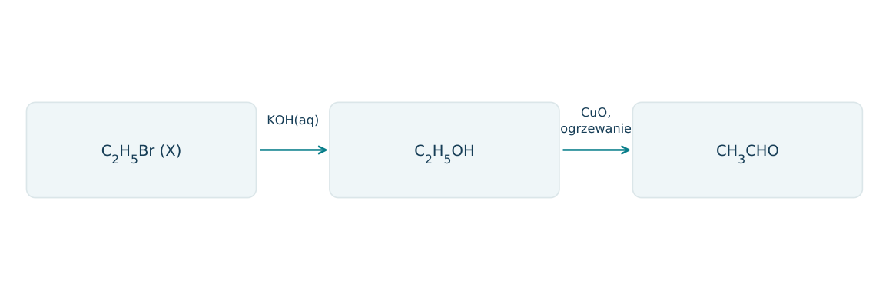
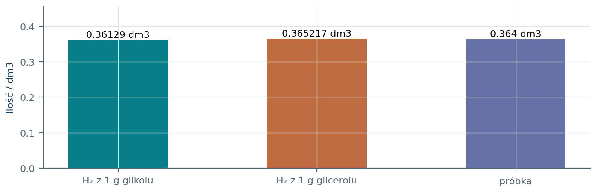
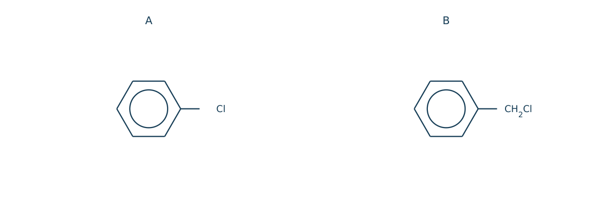
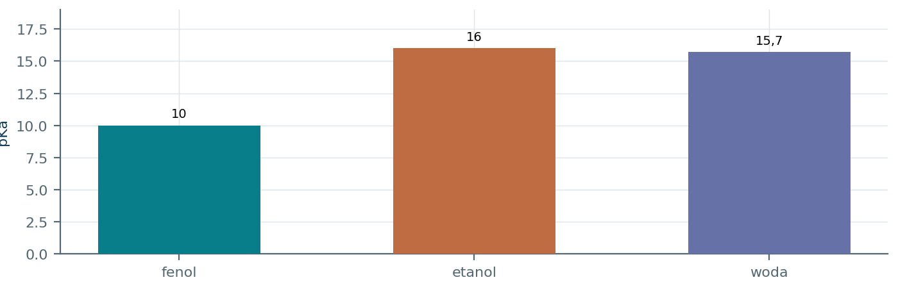
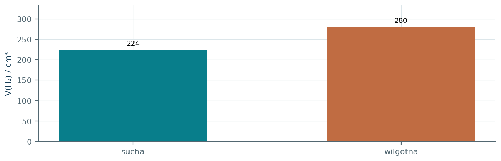

17.01 · 1 pkt
Nazwij CH3CH2CH2OH, CH3CH(OH)CH3 i (CH3)3COH oraz określ rzędowość alkoholi.
Rozwiązanie
- Propan-1-ol I-rzędowy; propan-2-ol II-rzędowy; 2-metylopropan-2-ol III-rzędowy.
50 zadań · 112 pkt · odpowiedzi rozwijane po samodzielnej próbie
← KatalogZadania PDFRozwiązania PDFDane do obliczeń: H 1; C 12; N 14; O 16; Na 23; Mg 24; Al 27; P 31; S 32; Cl 35,5; K 39; Ca 40; Cr 52; Mn 55; Fe 56; Cu 64; Zn 65; Ag 108; Br 80; I 127; Ba 137 (g/mol). NA = 6,02·1023 mol-1. Vm = 22,4 dm3/mol w warunkach normalnych (0°C, 1013 hPa). W 25°C Kw = 10-14. Dane podane w zadaniu mają pierwszeństwo.
Nazwij CH3CH2CH2OH, CH3CH(OH)CH3 i (CH3)3COH oraz określ rzędowość alkoholi.
Oceń zdania A i B, wpisując P albo F. Każde zdanie fałszywe popraw lub krótko uzasadnij. A: Fenol reaguje z wodnym NaOH. B: C6H5CH2OH jest fenolem.
Podaj wzór etano-1,2-diolu i propano-1,2,3-triolu.
Dlaczego etanol ma wyższą temperaturę wrzenia niż etan?
Jak zmienia się rozpuszczalność w wodzie alkoholi monohydroksylowych wraz ze wzrostem długości łańcucha?
Napisz równanie reakcji etanolu z Na. Podaj obserwację.
Napisz równanie reakcji fenolu z NaOH(aq). Podaj obserwację.
Napisz równanie reakcji etanolu z CuO po ogrzaniu. Podaj obserwację.
Napisz równanie reakcji propan-2-olu z CuO po ogrzaniu. Podaj obserwację.
Napisz równanie reakcji bromoetanu z wodnym KOH. Podaj obserwację.
Napisz równanie reakcji bromoetanu z alkoholowym KOH po ogrzaniu. Podaj obserwację.
Napisz równanie reakcji odwodnienia etanolu do etenu; podaj warunki. Podaj obserwację.
Napisz równanie reakcji fenolu z nadmiarem wody bromowej. Podaj obserwację.
Jak rozróżnić etanol i glicerol świeżo strąconym Cu(OH)2 w temperaturze pokojowej?
Jak rozróżnić etanol i fenol roztworem FeCl3?
Dlaczego fenol jest bardziej kwasowy niż etanol? Odwołaj się do powstającego anionu.
Czy etanol reaguje w typowych warunkach z wodnym NaOH tak jak fenol?
Czy reakcja próbki alkoholu z Na dowodzi braku wody? Uzasadnij.
Napisz reakcję fenolanu sodu z HCl i wyjaśnij jej kierunek.
Napisz sumaryczny zapis utleniania propan-1-olu do kwasu propanowego, stosując [O].
Dlaczego 2-metylopropan-2-ol nie utlenia się łagodnie do ketonu bez rozerwania szkieletu?
Jaki produkt główny powstaje z butan-2-olu przy eliminacji H2O zgodnie z regułą Zajcewa?
Napisz dwa możliwe alkeny konstytucyjne z eliminacji HBr z 2-bromobutanu. Wskaż główny.
Oblicz V(H2) w warunkach normalnych z reakcji 9,2 g bezwodnego etanolu z nadmiarem Na.
0,10 mola glicerolu reaguje ze stechiometrycznym nadmiarem Na; każda grupa OH reaguje. Oblicz n(H2).
Z 4,6 g etanolu otrzymano eten z wydajnością 80%. Oblicz objętość etenu w warunkach normalnych.
Ile gramów fenolu zużyje 0,20 mola NaOH przy tworzeniu fenolanu? M(fenolu)=94 g/mol.
Z 6,0 g propan-2-olu otrzymano 4,64 g propanonu. Oblicz wydajność; M alkoholu=60, ketonu=58 g/mol.
Związek C4H10O utlenia się łagodnie do ketonu. Podaj wzór i nazwę alkoholu.
Związek C4H10O nie daje typowej łagodnej reakcji z CuO. Zakładając, że to alkohol, ustal jego wzór i rzędowość.
Alkohol I-rzędowy C4H10O jest rozgałęziony. Napisz wzór alkoholu i aldehydu z jego łagodnego utlenienia.
Napisz dwie reakcje: etanolu z HBr do bromoetanu oraz fenolu z HNO3 do mononitrofenolu. Podaj dwa główne położenia NO2 w drugim produkcie.
Jak zbadać obecność sąsiednich grup OH w nieznanym alkoholu? Podaj odczynnik i wynik dodatni.
W reakcji 2-bromopropanu użyto wodnego NaOH, a w drugiej próbie alkoholowego KOH i ogrzewania. Podaj produkty organiczne obu prób.
Podano model syntezy: eten → etanol → etanal. Dobierz reagent lub warunki każdego etapu.
Czy fenol powinien odbarwiać wodę bromową tylko wtedy, gdy ma alkenowe C=C w łańcuchu? Uzasadnij.
Alkohol 7,4 g wydzielił z Na 1,12 dm3 H2 w warunkach normalnych. Przyjmij jedną grupę OH w cząsteczce. Oblicz M i wzór sumaryczny nasyconego acyklicznego alkoholu.
Dwa izomery C3H8O utleniono CuO. Jeden produkt daje próbę Tollensa, drugi nie. Wskaż oba alkohole i produkty utlenienia.
Dla fenolu i kwasu octowego wybierz NaHCO3 jako odczynnik rozróżniający. Załóż, że fenol jest słabszym kwasem od H2CO3. Podaj wynik.
Etanol utlenia się w kwasie pod działaniem MnO4- do CH3COOH. a) Ustal liczbę oddawanych elektronów na cząsteczkę etanolu. b) Zapisz półreakcję utleniania w kwasie. c) Zbilansuj równanie sumaryczne z MnO4-. d) Ile moli MnO4- potrzeba do 0,10 mola etanolu i jak zmieni się barwa?
Każdy numer 41-50 oznacza jedno zadanie główne; podpunkty są oceniane osobno.
2-bromobutan ogrzewano z KOH. W środowisku I dominowała substytucja, w II eliminacja. Na wykresie podano udziały molowe produktów organicznych. W II rozróżniono but-1-en i sumę obu izomerów but-2-enu. Zużyto 0,200 mola bromopochodnej; przemiana była całkowita.

17.41.1 (2 pkt) Przyporządkuj środowiska: wodny KOH albo stężony alkoholowy KOH. Zapisz równanie substytucji.
17.41.2 (1 pkt) Oblicz łączną ilość alkenów w II i masę Br2 potrzebną do ich całkowitego przyłączenia. M(Br2)=160.
17.41.3 (1 pkt) Dlaczego but-2-en może oznaczać dwa stereoizomery, a but-1-en nie?
I: wodny KOH; II: stężony alkoholowy KOH. CH3CHBrCH2CH3+KOH→CH3CH(OH)CH2CH3+KBr.
nalkenów=0,90·0,200=0,180 mol; mBr2=28,8 g.
Każdy atom C wiązania C=C w but-2-enie ma dwa różne podstawniki; końcowy C w but-1-enie ma dwa H.
Próbka nasyconego acyklicznego alkoholu monohydroksylowego o masie 3,70 g wydzieliła z nadmiarem Na 0,560 dm3 H2 w warunkach normalnych. Alkohol utlenia się do ketonu. Po odwodnieniu powstają trzy alkeny, jeśli liczyć osobno formy cis i trans.

17.42.1 (2 pkt) Wyznacz M alkoholu i jego wzór sumaryczny.
17.42.2 (1 pkt) Ustal wzór półstrukturalny i nazwę alkoholu.
17.42.3 (1 pkt) Podaj wzór produktu utleniania i określ jego chiralność.
2ROH+2Na→2RONa+H2; nalkoholu=2·0,560/22,4=0,0500 mol; M=74,0 g/mol; C4H10O.
CH3CH(OH)CH2CH3, butan-2-ol; jest drugorzędowy i daje but-1-en oraz cis/trans-but-2-en.
CH3COCH2CH3; achiralny, płaski C karbonylowy nie jest centrum stereogenicznym.
Fenol rozdziela się między wodę a niemieszający się z nią rozpuszczalnik organiczny: D=[fenol]org/[fenol]w=4. Do 100 cm3 wody zawierającej 0,0100 mola fenolu dodano 50,0 cm3 fazy organicznej. Zjonizowany fenolan pozostaje w wodzie; pKa fenolu=10,0. Pomiń zmianę objętości.
17.43.1 (2 pkt) Oblicz ilość obojętnego fenolu w fazie organicznej, zakładając pomijalną dysocjację.
17.43.2 (1 pkt) Wyznacz [fenolan]/[fenol] w wodzie o pH=12,0 z relacji pH=pKa+log([fenolan]/[fenol]).
17.43.3 (1 pkt) Wyjaśnij, jak zasadowienie zmieni skuteczność usuwania fenolu do fazy organicznej.
norg/nw=D·Vorg/Vw=2; norg=0,00667 mol, nw=0,00333 mol.
Stosunek wynosi 100.
Zmniejszy ją; NaOH przekształca fenol w jon fenolanowy pozostający w wodzie, zmniejszając udział formy obojętnej podlegającej ekstrakcji.
A, B i C to etanol, fenol i glicerol. Poniższa macierz podaje obserwacje trzech prób. Woda bromowa w zastosowanych warunkach daje biały osad z fenolem. W próbie III użyto świeżego Cu(OH)2, bez ogrzewania.

17.44.1 (2 pkt) Rozpoznaj związki i uzasadnij identyfikację B oraz C na podstawie budowy.
17.44.2 (1 pkt) Zapisz równanie B z nadmiarem Br2(aq), używając wzorów grupowych.
17.44.3 (1 pkt) Dlaczego sama próba z Na nie wystarcza do identyfikacji?
A etanol; B fenol, pierścień aktywowany przez OH; C glicerol z sąsiednimi grupami OH tworzącymi kompleks Cu(II).
C6H5OH+3Br2→C6H2Br3OH+3HBr; 2,4,6-tribromofenol.
Wszystkie mają wiązania O-H i wydzielają H2 z Na; obserwacja nie odróżnia zestawu grup ani budowy szkieletu.
Ze związku X otrzymano etanol w reakcji substytucji o wydajności 80,0%, następnie etanol utleniono do etanalu z wydajnością 75,0%. Schemat podaje odczynniki. Początkowo użyto 10,9 g X; M(X)=109 g/mol. Każdy etap ma stosunek molowy 1: 1.

17.45.1 (2 pkt) Zapisz dwa równania reakcji; w drugim uwzględnij zmianę CuO.
17.45.2 (1 pkt) Oblicz końcową masę etanalu.
17.45.3 (1 pkt) Jakie obserwacje w drugim etapie potwierdzają przemianę CuO?
C2H5Br+KOH→C2H5OH+KBr; C2H5OH+CuO→CH3CHO+Cu+H2O.
nX=0,100 mol; netanalu=0,100·0,80·0,75=0,0600 mol; m=2,64 g.
Zanik czarnego CuO i pojawienie się miedzianoczerwonego Cu; Cu(II) ulega redukcji do Cu(0).
1,00 g mieszaniny etano-1,2-diolu i propano-1,2,3-triolu poddano reakcji z nadmiarem Na, bez udziału wody. Otrzymano 0,3640 dm3 H2 w warunkach normalnych. Przyjmij M(glikolu)=62 i M(glicerolu)=92 g/mol, a reakcję wszystkich grup OH za ilościową.

17.46.1 (2 pkt) Ułóż równanie wiążące masę glikolu x z objętością H2 i oblicz skład masowy.
17.46.2 (1 pkt) Wyjaśnij współczynniki 1 i 1,5 przy liczbie moli obu alkoholi.
17.46.3 (1 pkt) Czy szafirowa barwa po dodaniu Cu(OH)2 pozwoli oznaczyć skład tej mieszaniny?
x/62+1,5(1-x)/92=0,3640/22,4=0,01625. x=0,310 g; glikol 31,0%, glicerol 69,0%.
Każde dwie grupy O-H dają jedną cząsteczkę H2; diol daje 1 mol H2/mol, triol 1,5 mola.
Nie bez dodatkowej kalibracji; oba składniki mają sąsiednie grupy OH i mogą dawać taki efekt.
A to chlorobenzen, B to chlorek benzylu. W łagodnej reakcji z wodnym NaOH B daje alkohol, A praktycznie nie reaguje. Nie zakładaj identycznej reaktywności wszystkich wiązań C-Cl. Rysunek pokazuje położenie Cl względem pierścienia.

17.47.1 (2 pkt) Zapisz równanie przemiany B i nazwij produkt.
17.47.2 (1 pkt) Określ hybrydyzację atomu C związanego z Cl w A i B.
17.47.3 (1 pkt) Dlaczego wyniku dla B nie można bez dodatkowych danych przenieść na A?
C6H5CH2Cl+NaOH→C6H5CH2OH+NaCl; alkohol benzylowy (fenylometanol).
A sp2, B sp3.
W A Cl jest bezpośrednio przy aromatycznym C, w B przy C łańcucha bocznego; odmienne otoczenie elektronowe zmienia podatność na substytucję.
Podano regułę: HIO4 rozrywa wiązanie C-C między atomami C niosącymi sąsiednie grupy OH; każdy taki C przechodzi w grupę karbonylową, zachowując pozostałe podstawniki. Rozważ butano-2,3-diol z rysunku. 1 mol reagenta rozszczepia jedno takie wiązanie.
17.48.1 (2 pkt) Narysuj lub zapisz wzory produktów organicznych i ich liczbę moli z 1 mola diolu.
17.48.2 (1 pkt) Oblicz masę etanalu z 4,50 g diolu (M=90) przy wydajności 80%.
17.48.3 (1 pkt) Czy według dostarczonej reguły propano-1,3-diol da taki sam efekt? Uzasadnij.
Powstają 2 mole CH3CHO, etanalu.
n=0,0500 mola diolu; etanal 0,0800 mola; m=3,52 g.
Nie; grupy OH nie są przy sąsiednich C, więc nie ma wskazanego wiązania C-C między dwoma C-OH.
Na wykresie podano umowne wartości pKa: fenol 10, etanol 16, woda 15,7. Im mniejsza pKa, tym silniejszy kwas. Dla reakcji HA+B-⇌A-+HB podano K=10^(pKa(HB)-pKa(HA)).

17.49.1 (2 pkt) Oblicz K dla fenolu z OH- i dla etanolu z OH-.
17.49.2 (1 pkt) Którą reakcję z wodnym NaOH można traktować jako praktycznie pełne tworzenie soli?
17.49.3 (1 pkt) Wyjaśnij, dlaczego obserwacja H2 przy reakcji etanolu z metalicznym Na nie zaprzecza temu porównaniu.
Fenol: 10^(15,7-10)≈5,0·105; etanol: 10^(15,7-16)≈0,50.
Fenolu: C6H5OH+OH-→C6H5O-+H2O.
Reakcja z Na jest procesem redoks z redukcją H do H2, a nie samą równowagą przeniesienia protonu na OH-.
Do oznaczania alkoholu metodą reakcji z Na użyto próbki z domieszką wody. Rysunek porównuje gaz z suchej i wilgotnej próbki zawierających tę samą ilość etanolu. Objętości H2 odnoszą się do warunków normalnych; cała woda również reaguje.

17.50.1 (2 pkt) Oblicz ilość etanolu w każdej próbce i masę dodatkowej wody.
17.50.2 (1 pkt) Napisz równanie odpowiedzialne za dodatkowy gaz.
17.50.3 (1 pkt) Oceń kierunek błędu, jeśli cały H2 z wilgotnej próbki przypisze się etanolowi.
nEtOH=2·0,224/22,4=0,0200 mol. Nadmiar H2=0,056/22,4=0,00250 mol; nH2O=0,00500 mol; m=0,0900 g.
2Na+2H2O→2NaOH+H2.
Wynik zawartości etanolu będzie zawyżony: wyliczono by 0,0250 zamiast 0,0200 mola.